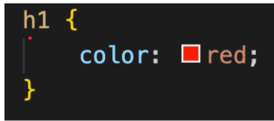
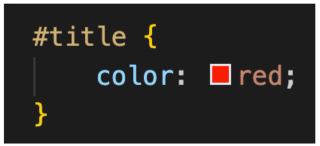
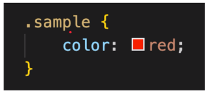
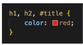

Selector
-
Cara untuk memilih elemen untuk ditambahkan style yaitu menggunakan tag
# untuk ID dan . untuk class;
- Memilih elemen pada CSS disebut sebagai selector;
- Ada banyak jenis selector dalam CSS;
Simple Selectors
-
simple selector adalah selector untuk memilih elemen berdasarkan nama
(tag), #id atau .class;
-
Jika kita ingin membuat selector unutk beberapa element, kita bisa
gunakan , (koma) sebagai pemisah;
Type Selectors
-
Type selector adalah selector untuk memilih elemen berdasarkan nama tag
HTML nya
-
link referensi

ID Selectors
-
ID selector adalah selector untuk memilih elemen berdasarkan atribut id
nya;
-
link referensi

Class Selector
-
Class selector adalah selector untuk memilih elemen berdasarkan nama
class nya;
-
link referensi

Selector List
-
Selector list adalah selector untuk memilih beberapa elemen sekaligus
dengan menggunakan , (koma) sebagai pemisah;
pada gambar di bawah ini menunjukan seleksi element untuk tag h1,h2, dan
id
